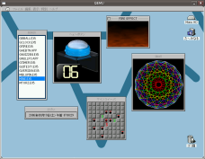
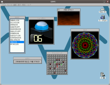

MonaOS is a Free Operating System.
 

MonaOS is a free operating system.
It's new, small, simple, open source and well structured.
So, MonaOS may be suitable for education of operating system and program at school.
You can download MonaOS for free at Download.
Aug 5, 2011 new
Mona OS ver.0.3.4(Download/Release notes/Screenshots 1 | 2 | 3 | 4).
{kind=link}
{kind=link}
{kind=link}
{kind=link}
- Facebook viewer.
- Gmail and Twitter using w3m browser
- New shell
Jan 8, 2011
Mona OS ver.0.3.3(Internal Release) (Download/Release notes).
- Ported OpenSSL.
Dec 29, 2010
Mona OS ver.0.3.2(Internal Release) (Download/Release notes).
- Ported mg(Emacs clone).
- Name server.
Nov 17, 2010
Mona OS ver.0.3.1 (Download/Screen Shot/Release notes).
{kind=link}
- BSD Socket.
- w3m browser.
- Mosh Scheme Interpreter.
- FAT32.
- KVM virtio-block driver.
- New file API.
Nov 7, 2010
Mosh 0.2.6 released. Download
Mar 3, 2010
Mona OS is moved to GitHub
Oct 10, 2009
Mona OS ver.0.3.0 (Download/Screen Shot 1 2 3/Release notes).
{kind=link}
{kind=link}
{kind=link}
- Sound Player.
- uIP Web Server.
- KVM virtio-net driver.
- Scheme based shell.
- Squirrel programing language.
Aug 7, 2009
R6RS Scheme Interpreter Mosh 0.2.0 realeased. (Download).
- Added concurrent library
May 3, 2009
R6RS Scheme Interpreter Mosh 0.1.0 realeased. (Download).
- Mosh becomes R6RS compliant
Sep 30, 2008
R6RS Scheme Interpreter Mosh 0.0.7 realeased. (Download).
- Implmented R6RS Unicode and Bytevectors
Aug 28, 2008
R6RS Scheme Interpreter Mosh 0.0.6 realeased. (Download).
- Added R6RS batch mode.
July 18, 2008
R6RS Scheme Interpreter Mosh 0.0.5 realeased. (Download).
- Added R6RS batch mode.
June 12, 2008
R6RS Scheme Interpreter Mosh 0.0.4 realeased. (Download).
- Ported Pattern matching library and fixed many bugs.
May 13, 2008
R6RS Scheme Interpreter Mosh realeased. (Download).
- First release
Nov 4, 2007
Easy Mona Player 0.0.7 for Windows with Qemu.(Download).
- Added click-able labels.
- Fixed multithread bug.
Oct 18, 2007
MonaADK(Mona Application Development Kit) 0.3.0 alpha9 Released.(Download).
- Mona application development kit running on Windows.
Oct 16, 2007
Easy Mona Player 0.0.6 for Windows with Qemu.(Download).
- Alpha version of Mona Music player.
- Speed up Shell and player.
Oct 5, 2007
Easy Mona Player 0.0.5 for Windows with Qemu.(Download).
- Alpha version of Mona Music player.
May 27, 2007
Mona OS ver.0.3.0alpha9 (Download/Screen Shot 1 2 3/Release notes).
- Scheme based shell(An exeperimental version).
- Squirrel programing language.
- Sound APIs.
Apr 15, 2007
Mona OS is getting Scheme shell, now developing. (Screen Shot)
Oct 9, 2006
Mona OS ver.0.3.0alpha8 (Download).
- simple web browser
- VFS support
- switch to Subversion
- support build on Linux with Mingw
- enhanced libc support
- APM support
- GUI selector on boot
Aug 6, 2006
File Server on Linux version 0.0.1 Released (Download).
- Full emulation of Mona Message and Shared Memory API.
- VFS support.
- New file server compares favorably with old file server.
Apr 25, 2006
We have moved to sf.net and start to use Subversion.